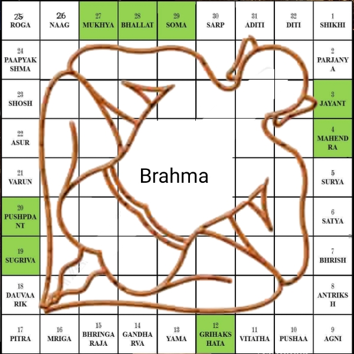

বাস্তু শাস্ত্র ও আধুনিক গৃহদর্শনশান্তি, সমৃদ্ধি ও প্রকৃতির সমন্বয় — Vastu Science for Modern Living
রানাঘাটের MyAstrology — ড. প্রদ্যুৎ আচার্যের বিশেষজ্ঞ বাস্তু পরামর্শ সেবা
প্রত্যেক মানুষের জীবনের মূল ভিত্তি হলো খাদ্য, বস্ত্র ও বাসস্থান। খাদ্য দেহকে টিকিয়ে রাখে, বস্ত্র দেহকে আচ্ছাদিত করে, কিন্তু বাসস্থান শুধু দেহের আশ্রয় নয়; এটি মন, প্রাণ ও আত্মারও নিরাপদ আশ্রয়স্থল।
আমি, প্রদ্যুৎ আচার্য, জ্যোতিষী ও হস্তরেখাবিদ, বিশ্বাস করি মানুষ সারাজীবন পরিশ্রম করে ও অর্থ সঞ্চয় করে একটি স্বপ্ন পূরণ করতে চান — নিজস্ব একটি সুন্দর, শান্ত ও নিরাপদ বাড়ি নির্মাণ। যেখানে দিনের ক্লান্তি শেষে পরিবার নিয়ে নিশ্চিন্তে সময় কাটানো যায়, যেখানে সূর্যের আলো সকালবেলা মন উজ্জ্বল করে আর রাতের আকাশের চাঁদ হৃদয়কে প্রশান্ত করে।
"যে গৃহে প্রকৃতি ও মহাজাগতিক শক্তির সঙ্গতি রক্ষা হয়, সে গৃহেই সত্যিকারের শান্তি ও সমৃদ্ধি আসে।" — রানাঘাট MyAstrology
ভারতীয় বাস্তু শাস্ত্রের দর্শন হলো — প্রকৃতির শক্তি, দিকনির্দেশ, আলো, বায়ুপ্রবাহ, চৌম্বক ক্ষেত্র ইত্যাদির সুষম সমন্বয়, যেখানে জ্যোতিষ শাস্ত্র, হস্তরেখা ও বাস্তু বিজ্ঞান একত্রে মানুষের শারীরিক, মানসিক ও আধ্যাত্মিক বিকাশ সাধনে সহায়ক হয়। এটি কুসংস্কার নয়, বরং হাজার বছরের প্রাকৃতিক বিজ্ঞান ও অভিজ্ঞতার মিশ্রণ।
স্বাস্থ্য
রোগব্যাধি কমে, সুস্বাস্থ্য বজায় থাকে
শান্তি
পারিবারিক অশান্তি দূর হয়, স্থিরতা আসে
সমৃদ্ধি
আর্থিক সমৃদ্ধি ও কর্মক্ষেত্রে সাফল্য বৃদ্ধি
সম্মান
সুনাম ও সামাজিক মর্যাদা বৃদ্ধি পায়
শিক্ষা
সন্তানরা সুশিক্ষা ও নৈতিকতায় বড় হয়
তাই বৈদিক জ্যোতিষ ও ভারতীয় বাস্তু শাস্ত্র অনুযায়ী রানাঘাট থেকে কলকাতা ও পশ্চিমবঙ্গের সর্বত্র গৃহনির্মাণ কেবল স্থাপত্য নয়; এটি একযোগে বিজ্ঞান, শিল্প ও আধ্যাত্মিক সাধনা। প্রকৃতি আমাদের সবচেয়ে বড় শিক্ষক, আর বাস্তু শাস্ত্র সেই শিক্ষার নকশা ও দিকনির্দেশ।
বাস্তু শাস্ত্র কী?আধ্যাত্মিক ও বৈজ্ঞানিক ভিত্তি — Vastu Shastra: Spiritual & Scientific Foundation

সংস্কৃত ভাষায় "বাস্তু" শব্দের অর্থ — যেখানে জীবজগৎ অবস্থান করে; "শাস্ত্র" অর্থ নিয়ম বা বিজ্ঞান। তাই বাস্তু শাস্ত্র হল এক প্রাচীন ভারতীয় স্থাপত্যবিজ্ঞান যার মূল উদ্দেশ্য — দিক, স্থান, উপাদান ও প্রাকৃতিক শক্তির সুষম বিন্যাস করে মানবজীবনের শান্তি, সুস্বাস্থ্য ও সমৃদ্ধি নিশ্চিত করা। প্রাচীন ঋষিরা বলেছেন: "यत् भूमिं च नाभिं च दिशं च विद्याम्" — যে ভূমি ও দিক জানে, সে সমৃদ্ধ হবে।
আধ্যাত্মিক ভিত্তি
প্রাচীন ঋষি-স্থপতিরা পৃথিবীকে এক জীবন্ত সত্তা — বাস্তুপুরুষ — রূপে কল্পনা করেছেন। চার দিক, আকাশ ও পাতাল — এই পঞ্চপাত্রের ভারসাম্য রক্ষা করাই শাস্ত্রের মূল লক্ষ্য। প্রতিটি দিকের সঙ্গে নির্দিষ্ট দেবতা যুক্ত — পূর্বে ইন্দ্র, উত্তরে কুবের, দক্ষিণে যম, পশ্চিমে বরুণ।
বাস্তু বিজ্ঞান ভিত্তি
- ☀ সূর্যালোক: পূর্বের সকালের আলো জীবাণুনাশক ও ভিটামিন-D উৎস।
- 🍃 বায়ুপ্রবাহ: ক্রস-ভেন্টিলেশন আর্দ্রতা কমায়, CO₂ নিয়ন্ত্রণ করে।
- 🧲 চৌম্বক ক্ষেত্র: মাথা দক্ষিণমুখী রাখলে রক্তসঞ্চালন উন্নত হয়।
- 🔥 তাপ নিয়ন্ত্রণ: দক্ষিণ/পশ্চিমে ভারী দেয়াল তাপ নিয়ন্ত্রণ করে।
- 🔊 শব্দ নিয়ন্ত্রণ: কক্ষের আকৃতি ও উচ্চতা মানসিক শান্তি বাড়ায়।
প্রাচীন বাস্তু শাস্ত্র ও আধুনিক স্থাপত্যইতিহাস ও তুলনামূলক বিশ্লেষণ — Vastu Shastra vs Modern Architecture
কেন প্রাচীনকাল থেকে মানুষ বাস্তু মানত?
| দিক | বাস্তু শাস্ত্র | আধুনিক স্থাপত্য |
|---|---|---|
| দিকনির্দেশ | প্রাকৃতিক আলো, বায়ু ও দেবতার অবস্থান অনুযায়ী | জমির আকৃতি, ফাংশন ও নান্দনিকতা অনুযায়ী🖥 |
| উপাদান | প্রাকৃতিক উপাদান — পাথর, মাটি, কাঠ | কংক্রিট, স্টিল, কাচ, আধুনিক কম্পোজিট |
| বৈজ্ঞানিক যুক্তি | সূর্য, বাতাস, চৌম্বক ক্ষেত্রের সঙ্গে সামঞ্জস্য | আরাম, ফাংশনালিটি, প্রযুক্তি নির্ভর |
| জীবনদর্শন | প্রকৃতির সঙ্গে মিল রেখে বসবাস | প্রযুক্তি ও যান্ত্রিক সুবিধা নির্ভর |
আধুনিক স্থাপত্যে আরাম, প্রযুক্তি ও নান্দনিক নকশা গুরুত্ব পেলেও যদি বাস্তু শাস্ত্রের বৈজ্ঞানিক উপাদানগুলো (প্রাকৃতিক আলো-বাতাস, তাপ নিয়ন্ত্রণ, সঠিক দিকনির্দেশ) সংমিশ্রিত করা যায়, তবে স্থাপনার কার্যকারিতা ও বাসস্থানের জীবনমান — উভয়ই উন্নত হবে।
কেন বাস্তু মানতে হবে?শাস্ত্রীয় ও বৈজ্ঞানিক দৃষ্টিভঙ্গি — Why Vastu Matters
প্রাচীন ঋষি-মুনিরা বিশ্বাস করতেন, মানুষের গৃহ কেবল ইট-পাথরের গাঁথুনি নয় — এটি জীবনের শক্তিক্ষেত্র। সঠিকভাবে নির্মিত হলে গৃহে শান্তি, সমৃদ্ধি ও সুস্বাস্থ্য আসে।
অথর্ববেদ (পৃথিবী সূক্ত / ভূমি সূক্ত): "शं नो भूमिः शं नो आपः शं नो वनस्पतिः।"
অর্থাৎ — "ভূমি আমাদের জন্য শুভ হোক, জল আমাদের জন্য শুভ হোক, বৃক্ষরাজি আমাদের জন্য শুভ হোক।"
প্রাচীন শাস্ত্র মতে বাস্তু মানলে —
- স্বাস্থ্য: সঠিক আলো ও বাতাসে রোগ-ব্যাধি দূরে থাকে।
- শান্তি: শক্তির ভারসাম্য বজায় থাকলে মন ও পরিবারে স্থিরতা আসে।
- সমৃদ্ধি: আর্থিক উন্নতি ও কর্মক্ষেত্রে সাফল্য বৃদ্ধি পায়।
- সামাজিক সম্মান: শুভ দিকনির্দেশে তৈরি গৃহে সুনাম ও মর্যাদা বৃদ্ধি পায়।
বাস্তব উদাহরণ
- প্রাচীন: মহেঞ্জোদারো ও হরপ্পা সভ্যতার স্থাপত্যে আলো-বাতাস চলাচলের নিখুঁত ব্যবস্থা ছিল।
- আধুনিক: ইনফোসিস-সহ অনেক কর্পোরেট অফিস বাস্তু নীতি মেনে ভবন সাজিয়েছে।
- গৃহস্থ: অনেক পরিবার মূল ফটক শুভ দিকে স্থানান্তরের পর উন্নতি লক্ষ্য করেছেন।
বাস্তু শাস্ত্র মানলে গৃহে শান্তি, স্বাস্থ্য ও সমৃদ্ধি বৃদ্ধি পায়।
জমির দিক ও রাস্তার অবস্থানPlot Direction & Road Position — Vastu Science
ময়মত বাস্তু শাস্ত্র ও বিশ্বকর্মা প্রকাশ গ্রন্থে বলা হয়েছে: "पूर्वेण वा उत्तरतः प्राप्तो मार्गः शुभदः सदा" — "যে গৃহের পূর্ব বা উত্তর দিকে রাস্তা থাকে, সেখানে সর্বদা শুভ ফল হয়।"
কোন দিকের জমি শুভ?
- পূর্বমুখী জমি: সূর্যের প্রথম আলো সরাসরি প্রবেশ করে — স্বাস্থ্য, জ্ঞান ও সমৃদ্ধির প্রতীক।
- উত্তরমুখী জমি: কুবেরের দিক — অর্থনৈতিক উন্নতি ও বাণিজ্যে সাফল্য এনে দেয়।
- পশ্চিমমুখী জমি: মিশ্র ফল — বিকেলের সূর্যালোক বেশি তাপ সৃষ্টি করে, তবে অফিস বা ব্যবসায় লাভজনক হতে পারে।
- দক্ষিণমুখী জমি: সাধারণত এড়ানো উচিত — শাস্ত্রমতে দুর্ঘটনা, রোগ ও আর্থিক ক্ষতির সম্ভাবনা।
রাস্তার অবস্থান অনুযায়ী ফলাফল
| জমির মুখ | রাস্তার অবস্থান | শাস্ত্রীয় ফলাফল | বৈজ্ঞানিক কারণ |
|---|---|---|---|
| পূর্বমুখী | পূর্ব পাশে রাস্তা | অত্যন্ত শুভ — স্বাস্থ্য, জ্ঞান, খ্যাতি বৃদ্ধি | সকালের সূর্যালোক ভিটামিন D উৎপাদন ও জীবাণুনাশক প্রভাব ফেলে |
| উত্তরমুখী | উত্তর পাশে রাস্তা | শুভ — ধনলাভ, বাণিজ্য বৃদ্ধি | উত্তরের ঠান্ডা বাতাস ও সুষম আলো ঘরকে শীতল ও আরামদায়ক রাখে |
| পশ্চিমমুখী | পশ্চিম পাশে রাস্তা | মিশ্র ফল — কিছু অর্থলাভ, তবে স্বাস্থ্য সমস্যা | বিকেলের তীব্র সূর্যালোক ঘর গরম করে, অস্বস্তি বাড়ায় |
| দক্ষিণমুখী | দক্ষিণ পাশে রাস্তা | অশুভ — রোগ, দুর্ঘটনা | গরম বাতাস ও ধূলিকণা প্রবাহ বেশি হয় |
| পূর্বমুখী | উত্তর-পূর্ব কোণে রাস্তা | অত্যন্ত শুভ — আধ্যাত্মিক উন্নতি, সৌভাগ্য | ঈশান কোণ আলো ও বাতাসের সর্বোত্তম প্রবেশপথ |
বিশেষ শাস্ত্রীয় নির্দেশনা
- ঈশান কোণ খোলা রাখা — শুভ শক্তি প্রবেশে সহায়ক।
- নৈঋত্য কোণ বন্ধ রাখা — স্থায়িত্ব ও সম্পদ রক্ষায় সহায়ক।
- অগ্নি কোণ রাস্তার মুখে হলে অগ্নি দোষ এড়াতে সচেতনতা জরুরি।
- বায়ু কোণ রাস্তার মুখে হলে চলাফেরায় অস্থিরতা বেড়ে যায়।
মাসভিত্তিক বাস্তু নাগের শয়নদিক ও নির্মাণ নির্দেশিকাMonthly Vastu Naga Direction — গৃহনির্মাণের শুভ স্থান নির্বাচন
লেখক: প্রদ্যুৎ আচার্য – জ্যোতিষ ও হস্তরেখাবিদ | Authentic Astrology & Vastu Science
বাস্তু শাস্ত্রে বাস্তু নাগ হল জমির জীবন্ত সত্তা, যার শারীরিক অংশ মাথা, লেজ, পিঠ ও কোল হিসেবে চিহ্নিত। গৃহনির্মাণের ক্ষেত্রে এই চার অংশের অবস্থান বিশেষ গুরুত্ব বহন করে।
- মাথার অংশে নির্মাণ করা অশুভ — এটি বাস্তু নাগের প্রাণকেন্দ্র। ⚠
- লেজের অংশে নির্মাণ এড়ানো ভালো — স্থায়িত্ব কম থাকে। 🚫
- পিঠের অংশে নির্মাণ করলে অগ্রগতি ধীর হয়। 🐢
- কোলের অংশে নির্মাণ সবচেয়ে শুভ — শান্তি, ঐশ্বর্য ও দীর্ঘস্থায়ী সুখ আসে। 🏡✨
শাস্ত্র মতে — "यत्र वक्षः, तत्र भवनं महाशुभम्"
অর্থাৎ, "যেখানে বাস্তু নাগের কোল, সেখানে গৃহনির্মাণে ঐশ্বর্য, শান্তি ও দীর্ঘস্থায়ী সুখ লাভ হয়।" 🕉🙏
পৌরাণিক কাহিনী: এক সময় বাস্তুপুরুষ বা বাস্তু নাগ স্বর্গ থেকে পৃথিবীতে নেমে এসে মানুষদের গৃহনির্মাণে সাহায্য করতেন। তিনি নিজের শরীর দিয়ে পৃথিবীর জমি ও দিক নির্ধারণ করতেন। তাই কোনো গৃহ নির্মাণের সময় তাঁর মাথা বা লেজের অংশে নির্মাণ করলে তিনি রুষ্ট হতেন। অন্যদিকে তার কোলের অংশে গৃহ নির্মাণ করলে শান্তি, সমৃদ্ধি ও সৌভাগ্য বজায় থাকত। 🐍✨
মাসভিত্তিক বাস্তু নাগের শয়নদিক ও নির্মাণ নির্দেশিকা
| মাস (বাংলা) | মাথার দিক | লেজের দিক | কোলের দিক | পিঠের দিক | শুভ নির্মাণ দিক | দরজার মুখ |
|---|---|---|---|---|---|---|
| বৈশাখ | উত্তর-পূর্ব | দক্ষিণ-পশ্চিম | দক্ষিণ অংশ | উত্তর অংশ | জমির দক্ষিণ অংশে পূর্বমুখী ঘর | উত্তরমুখী |
| জ্যৈষ্ঠ | পূর্ব | পশ্চিম | দক্ষিণ-পশ্চিম অংশ | উত্তর-পূর্ব অংশ | জমির দক্ষিণ-পশ্চিমে উত্তর-পূর্ব খোলা | উত্তর-পূর্ব খোলা |
| আষাঢ় | দক্ষিণ-পূর্ব | উত্তর-পশ্চিম | পশ্চিম অংশ | পূর্ব অংশ | জমির পশ্চিম অংশে পূর্বমুখী ঘর | পূর্বমুখী |
| শ্রাবণ | দক্ষিণ | উত্তর | উত্তর-পূর্ব অংশ | দক্ষিণ-পশ্চিম অংশ | উত্তর-পূর্বে দক্ষিণমুখী ঘর | দক্ষিণমুখী |
| ভাদ্র | দক্ষিণ-পশ্চিম | উত্তর-পূর্ব | পূর্ব অংশ | পশ্চিম অংশ | পূর্বদিকে পশ্চিমমুখী ঘর | পশ্চিমমুখী |
| আশ্বিন | পশ্চিম | পূর্ব | উত্তর-পশ্চিম অংশ | দক্ষিণ-পূর্ব অংশ | উত্তর-পশ্চিমে দক্ষিণমুখী ঘর | দক্ষিণমুখী |
| কার্তিক | উত্তর-পশ্চিম | দক্ষিণ-পূর্ব | দক্ষিণ অংশ | উত্তর অংশ | দক্ষিণ অংশে উত্তরমুখী ঘর | উত্তরমুখী |
| অগ্রহায়ণ | উত্তর | দক্ষিণ | দক্ষিণ-পূর্ব অংশ | উত্তর-পশ্চিম অংশ | দক্ষিণ-পূর্বে পশ্চিমমুখী ঘর | পশ্চিমমুখী |
| পৌষ | উত্তর-পূর্ব | দক্ষিণ-পশ্চিম | পশ্চিম অংশ | পূর্ব অংশ | পশ্চিম অংশে পূর্বমুখী ঘর | পূর্বমুখী |
| মাঘ | পূর্ব | পশ্চিম | উত্তর-পূর্ব অংশ | দক্ষিণ-পশ্চিম অংশ | উত্তর-পূর্বে দক্ষিণমুখী ঘর | দক্ষিণমুখী |
| ফাল্গুন | দক্ষিণ-পূর্ব | উত্তর-পশ্চিম | পূর্ব অংশ | পশ্চিম অংশ | পূর্ব অংশে পশ্চিমমুখী ঘর | পশ্চিমমুখী |
| চৈত্র | দক্ষিণ | উত্তর | দক্ষিণ-পশ্চিম অংশ | উত্তর-পূর্ব অংশ | দক্ষিণ-পশ্চিমে উত্তরমুখী ঘর | উত্তরমুখী |
✅ উদাহরণ:
যদি বৈশাখ মাসে ঘর করেন → বাস্তু নাগের মাথা উত্তর-পূর্বে অবস্থান করছে, তাই সেই অংশে নির্মাণ করা অশুভ। কোল অংশ দক্ষিণ দিকে থাকার কারণে ঘর নির্মাণ হবে জমির দক্ষিণ অংশে এবং ঘরের প্রবেশদ্বার হবে উত্তরমুখী। এভাবে নির্মাণ করলে প্রাকৃতিক আলো ও বায়ুপ্রবাহ সুষম থাকবে এবং শুভ শক্তি প্রবাহিত হবে।
দেবতা ও প্রবেশদ্বারের ফলাফল — ৩২ দেবতার শাস্ত্রীয় বিচারVastu Purusha Mandala — 32 Deities & Gate Direction Results

Mayamata Vastu Shastra, Brihat Samhita ও Vishwakarma Prakash অনুসারে, বাস্তু পুরুষ মণ্ডলে ৩২ দেবতা বিরাজমান। বাড়ির প্রবেশদ্বার কোন দেবতার স্থানে পড়ছে, তার উপর ভিত্তি করে জীবনে আসে শুভ, অশুভ বা মিশ্র ফলাফল।
শুভ-অশুভ চিহ্নিতকরণ
● সবুজ – শুভ ফলাফল (সম্পদ, স্বাস্থ্য, শান্তি) | ● হলুদ – নিরপেক্ষ / মিশ্র ফলাফল | ● লাল – অশুভ ফলাফল (অস্থিরতা, ক্ষতি)
সূত্র: Mayamata Vastu Shastra, Brihat Samhita, Vishwakarma Prakash
| পদ নং | দেবতার নাম | অবস্থান (দিক/সেক্টর) | প্রবেশদ্বার থাকলে ফল | বৈজ্ঞানিক যুক্তি |
|---|---|---|---|---|
| 1 | শিখি / Shikhi | উত্তর-পূর্ব → পূর্ব | শুভ — সম্পদ ও সুখ বৃদ্ধি | সকালে উজ্জ্বল নরম আলো প্রবেশে জীবাণু কম, মনোজাগরণ বাড়ে। |
| 2 | পার্জন্য / Parjanya | পূর্ব (E) | শুভ — বৃষ্টি ও ফসলের প্রাচুর্য | পূর্ব দিক থেকে শীতল হাওয়া ও আর্দ্রতা জলসম্পদ সুবিধা দেয়। |
| 3 | জয়ন্ত / Jayanta | পূর্ব-মধ্য | অতি-শুভ — বিজয় ও সামাজিক সম্মান | সকালের আলোর প্রভাবে কর্ম-মনোবল ও নেতৃত্বগুণ বাড়ে। |
| 4 | মহেন্দ্র / Mahendra (Indra) | পূর্ব-দক্ষিণ | অতি-শুভ — সম্মান, প্রভাব, ধনলাভ | ইতিবাচক প্রবেশপথ সামাজিক দৃশ্যমানতা বাড়ায়। |
| 5 | সূর্য / Surya | পূর্ব-দক্ষিণ কেন্দ্র | মিশ্র — স্বাস্থ্য ও শক্তি (অতিরিক্ত হলে উত্তেজনা) | ভোরের সূর্য উপকারি; অতিরিক্ত প্রবেশে তাপ ও অস্বস্তি হতে পারে। |
| 6 | সত্য / Satya | পূর্ব-উত্তর-মধ্য | শুভ — ন্যায়, সততা ও মানসিক স্থিতি | স্বচ্ছ বাতাস মানসিক স্বচ্ছতা বাড়ায়, নৈতিক স্বনির্ভরতা বৃদ্ধি পায়। |
| 7 | ভৃশ / Bhrisha | দক্ষিণ-পূর্বে ঝুঁকি অংশ | মধ্যম/অশুভ — অস্থিরতা, ক্ষতি | অতিরিক্ত তাপ-প্রবাহ বা অনিয়ন্ত্রিত বায়ু মানসিক উত্তেজনা বাড়ায়। |
| 8 | অন্তরিক্ষ / Antariksha | পূর্ব→দক্ষিণ শেষ অংশ | অশুভ — আর্থিক ক্ষতি, অস্থিরতা | অনিয়ন্ত্রিত প্রবেশ পথ নিরাপত্তা সমস্যার দিকে পরিচালিত করতে পারে। |
| 9 | অগ্নি / Agni | দক্ষিণ-পূর্ব (SE) | সতর্ক — অগ্নিবিপদ, স্বাস্থ্যঝুঁকি | রান্নাঘর রাস্তার মুখে থাকলে তাপ ও ধোঁয়ার সমস্যা বাড়ে। |
| 10 | পুষা / Pushaa | দক্ষিণ-মধ্য | মধ্যম/শুভ — অর্থ ও কর্মে সমর্থন | উষ্ণ পরিবেশে কাজে উৎপাদনশীলতা বাড়তে পারে। |
| 11 | বিতথ / Vitatha | দক্ষিণ-মধ্য ঝুঁকিপ্রবণ | অশুভ — প্রতারণা, অস্থিতিশীলতা | অপরিকল্পিত কার্যকলাপকে উৎসাহিত করতে পারে। |
| 12 | গৃহক্ষতা / Grihakshata | দক্ষিণ-মধ্য (S) | অশুভ — পারিবারিক কলহ | প্রবেশপথে ব্যক্তিগত এলাকা প্রকাশ্যে হলে মানসিক চাপ বাড়ে। |
| 13 | যম / Yama | দক্ষিণ (S) কেন্দ্র | অতি-অশুভ — রোগ, গুরুতর ক্ষতি | দক্ষিণের অতিরিক্ত তাপ স্বাস্থ্যঝুঁকি বাড়াতে পারে। |
| 14 | গন্ধর্ব / Gandharva | দক্ষিণ-পশ্চিম→দক্ষিণ | মধ্যম/শুভ — শিল্প, সঙ্গীত, সাফল্য | সৃজনশীল কার্যকলাপ ও সামাজিক মেলামেশায় মানসিক সমৃদ্ধি দেখা যায়। |
| 15 | ভৃঙ্গরাজ / Bhringaraja | দক্ষিণ-পশ্চিম (SW) | শুভ — সুখ, সামাজিক মেলামেশা | স্থির পরিবেশে পারিবারিক সান্নিধ্য ও আধ্যাত্মিক স্থিতি বাড়ে। |
| 16 | মৃগ / Mriga | দক্ষিণ→দক্ষিণ-পশ্চিম | অশুভ/মধ্যম — অর্থ ক্ষতি | রাস্তামুখী হলে চলাচল ও অস্থিরতা বাড়ায়। |
| 17 | পিতৃ / Pitra | পশ্চিম-দক্ষিণ-পশ্চিম | অশুভ — পিতৃসম্পর্কে সমস্যা | বিকেলের তীব্র সূর্যালোক ও ধুলো আর্থিক চাপ বাড়ে। |
| 18 | দৌবারিক / Dauvaarik | পশ্চিম (W) | শুভ — পরিবারের কর্তার সম্মান | নিয়ন্ত্রিত আলো-আর্দ্রতা সামাজিক যোগাযোগকে উৎসাহিত করে। |
| 19 | সুগ্রীব / Sugriva | পশ্চিম-উত্তর-পশ্চিম | অতি-শুভ — সাহস ও ব্যবসায় উন্নতি | বিকেলের আলো ব্যবসায়িক স্থানকে আকর্ষণীয় করে তোলে। |
| 20 | পুষ্পদন্ত / Pushpadant | পশ্চিম-মধ্য | অতি-শুভ — আর্থিক স্থিতিশীলতা | স্থিতিশীল আলো সঞ্চয় ও আর্থিক কার্যকলাপকে সুবিধা দেয়। |
| 21 | বরুণ / Varuna | পশ্চিম-উত্তর | শুভ — জলসম্পদ, সামাজিক মর্যাদা | উত্তর-পশ্চিম হাওয়া জলসম্পদের সদ্ব্যবহারে সহায়তা করে। |
| 22 | অসুর / Asur | পশ্চিম-উত্তর-পশ্চিম | অশুভ — শত্রুতা, আইনি ঝামেলা | অসামঞ্জস্যপূর্ণ বাতাস নিরাপত্তা ও সামাজিক উত্তেজনা বাড়ায়। |
| 23 | শোশ / Shosh | উত্তর-পশ্চিম (NW) | অশুভ — শুষ্কতা, দুর্বলতা | শুষ্ক বাতাস ও কম আর্দ্রতা স্বাস্থ্য ও উদ্যমে নেতিবাচক প্রভাব ফেলে। |
| 24 | পাপযক্ষ্মা / Paapyakshma | উত্তর-পশ্চিম→উত্তর | অশুভ — গুরুতর অসুখ, নৈতিক ঝুঁকি | অনিয়ন্ত্রিত প্রবেশ নিরাপত্তা ও স্বাস্থ্য ঝুঁকি বৃদ্ধি করে। |
| 25 | রোগ / Roga | উত্তর (N) | অশুভ — রোগব্যাধি, দুর্বলতা | উত্তর দিক ঠান্ডা ও আর্দ্র হলে ব্যাকটেরিয়া বৃদ্ধির সম্ভাবনা বাড়ে। |
| 26 | নাগ / Naag | উত্তর-উত্তর-পূর্ব | অশুভ — উদ্বেগ, শত্রুতা | অনিয়ন্ত্রিত শক্তি প্রবেশ নিরাপত্তাজনিত উদ্বেগ বাড়ায়। |
| 27 | মুখ্য / Mukhya | উত্তর-মধ্য | অতি-শুভ — নেতৃত্ব, সাফল্য, ধনলাভ | উত্তরের শীতল বাতাস ও সুষম আলো বিকাশ ও আর্থিক স্থিতি বাড়ায়। |
| 28 | ভল্লাট / Bhallat | উত্তর-উত্তর-পশ্চিম | অতি-শুভ — ব্যবসায়িক সাফল্য, ঐশ্বর্য | সুষম তাপমাত্রা ও হাওয়া ব্যবসা-কার্যে স্থিতিশীলতা আনে। |
| 29 | সোম / Soma | উত্তর-পূর্ব (NE) | শুভ — শান্তি, আধ্যাত্মিক উন্নতি, স্বাস্থ্য | ঈশান কোণের নরম আলো ও ঠান্ডা বাতাস ধ্যান ও সুস্থতার জন্য উপযোগী। |
| 30 | সার্প / Sarp (Bhujang) | উত্তর-পূর্বের প্রান্ত | অশুভ — কুঁজতা, শত্রুতা, স্বাস্থ্যসমস্যা | অনিয়ন্ত্রিত আর্দ্রতা ও ছায়া সমস্যার কারণে সুরক্ষা বিবেচ্য। |
| 31 | অদিতি / Aditi | উত্তর-উত্তর-পূর্ব | শুভ — প্রাচুর্য, সন্তানের সুখ | উত্তর-উত্তর-পূর্বের খোলা পথ জলের সুষমতা ও আলো প্রদান করে। |
| 32 | দিতি / Diti | উত্তর (N) শেষাংশ | অশুভ — বিবাদ, অভাব | আলো-আর্দ্রতার অভাব মানসিক অস্থিরতা ও আর্থিক সংকট ডেকে আনতে পারে। |
ঘরের নকশা — শাস্ত্রীয় ও বৈজ্ঞানিক দৃষ্টিতেVastu Room Design — Scriptural & Scientific Guidance
(রেফারেন্স: ময়মত বাস্তু শাস্ত্র, বৃহৎ সংহিতা, বিশ্বকর্মা প্রকাশ)
বাস্তু শাস্ত্র অনুযায়ী ঘরের নকশা শুধু ধর্মীয় বিশ্বাস নয়, বরং আলো, বাতাস, তাপমাত্রা ও প্রাকৃতিক শক্তির সঠিক ব্যবহার করার বিজ্ঞান। এখানে প্রতিটি কক্ষের সঠিক দিকনির্দেশ, শাস্ত্রীয় কারণ ও বৈজ্ঞানিক ব্যাখ্যা তুলে ধরা হলো।
১⃣ বেডরুম — দক্ষিণ-পশ্চিম (SW)
- শাস্ত্রীয়: বৃহৎ সংহিতা অনুসারে দক্ষিণ-পশ্চিম দিক "নির্মল, স্থির ও রক্ষাকারী"।
- বৈজ্ঞানিক: বিকালের তাপ ঘরকে উষ্ণ রাখে, বায়ুপ্রবাহ কম থাকায় ঘুম আরামদায়ক।
২⃣ রান্নাঘর — দক্ষিণ-পূর্ব (SE)
- শাস্ত্রীয়: অগ্নিদেব দক্ষিণ-পূর্বে বাস করেন, রান্না এই দিকে করলে সমৃদ্ধি বৃদ্ধি হয়।
- বৈজ্ঞানিক: সকালের আলো রান্নাঘরকে শুকনো ও জীবাণুমুক্ত রাখে।
৩⃣ ঠাকুরঘর — উত্তর-পূর্ব (NE)
- শাস্ত্রীয়: ঈশান কোণ দেবতাদের আসন, মানসিক শান্তি বৃদ্ধি পায়।
- বৈজ্ঞানিক: সকালের সূর্যালোক জীবাণুনাশক, ঠান্ডা বায়ু ধ্যানের জন্য উপযোগী।
৪⃣ বাথরুম / টয়লেট — WNW বা SSE
- শাস্ত্রীয়: অশুচি কাজ এই স্থানে রাখলে প্রধান বাস্তু শক্তি বিঘ্নিত হয় না।
- বৈজ্ঞানিক: ভালো বায়ু চলাচল আর্দ্রতা ও দুর্গন্ধ দ্রুত বের করে দেয়।
৫⃣ সিঁড়ি — দক্ষিণ-পশ্চিম / দক্ষিণ / পশ্চিম
- শাস্ত্রীয়: ভারী কাঠামো দক্ষিণ বা পশ্চিমে স্থায়িত্ব আনে।
- বৈজ্ঞানিক: উত্তর ও পূর্ব দিক উন্মুক্ত থাকে, আলো-বাতাস প্রবাহ বৃদ্ধি পায়।
উদাহরণ নকশার লেআউট

পূর্ণ রঙিন বাস্তু মণ্ডলসহ ফ্লোরপ্ল্যান — প্রতিটি রুমের অবস্থান আলাদা রঙে, উত্তর দিক উপরে।
বাস্তু শাস্ত্রের দার্শনিক ও আধ্যাত্মিক দৃষ্টিভঙ্গিVedic Philosophy of Vastu — Cosmic Harmony & Human Life
বাস্তু শাস্ত্র এককভাবে একটি স্থাপত্য বিজ্ঞান নয়; এটি প্রকৃতির মহাজাগতিক শক্তি ও মানবজীবনের আধ্যাত্মিক সম্পর্কের এক অপূর্ব মেলবন্ধন। প্রাচীন ভারতীয় দর্শন মতে, প্রতিটি স্থান ও দিক একটি জীবন্ত শক্তির কেন্দ্রবিন্দু, যা আমাদের দেহ ও চেতনার সঙ্গে সেতুবন্ধন রচনা করে।
"वासुदेव कुटुम्बकम्" — সমগ্র ব্রহ্মাণ্ডই এক পরিবার; বাস্তু শাস্ত্র এই চিন্তা থেকে উদ্ভূত, যেখানে প্রকৃতির পঞ্চ মহাতত্ত্বের (পৃথিবী, জল, অগ্নি, বায়ু, আকাশ) সুষম সমন্বয়ে আমাদের আবাস তৈরি হয়।
জ্যোতিষশাস্ত্রের সূক্ষ্ম জ্ঞানে দেখা যায় যে, সময়, স্থান ও দিকের মহাজাগতিক গতি বাস্তু শাস্ত্রের মাধ্যমে মানব জীবনের গুণগত মান উন্নত করে। গৃহ যখন প্রকৃতি ও মহাজাগতিক শক্তির সঙ্গে সঙ্গতি রক্ষা করে নির্মিত হয়, তখন তা কেবল কাঠামো নয়, বরং এক পবিত্র মন্দির — যেখানে আত্মার শুদ্ধি ও বিকাশ ঘটে।
বাস্তু শাস্ত্রের নীতিমালা শুধু কুসংস্কার নয়; এটি বহু শতাব্দীর জ্ঞান, পর্যবেক্ষণ ও প্রাকৃতিক বিজ্ঞানের মেলবন্ধন। রোগমুক্ত দেহ, শান্তিময় মন এবং সমৃদ্ধ জীবন অর্জনে বাস্তু শাস্ত্রের গুরুত্ব অতুলনীয়।
উপসংহার
বাস্তু শাস্ত্র মানুষের জীবনকে শুধুমাত্র আরামদায়ক ঘর দেয় না, বরং একটি আধ্যাত্মিক অভয়ারণ্য গড়ে তোলে যেখানে প্রকৃতি ও মানব আত্মার মধ্যে নিবিড় সংযোগ প্রতিষ্ঠিত হয়। প্রকৃতির সর্বোচ্চ শক্তিকে সম্মান করে, যথাযথ দিকনির্দেশনা ও স্থান নির্বাচন আমাদের জীবনে সত্যিকার শান্তি ও সমৃদ্ধির পথ প্রশস্ত করে। MyAstrology-র আস্থায়, এই প্রাচীন বিজ্ঞান আজও আধুনিক জীবনের জন্য অপরিহার্য দিকনির্দেশনা হয়ে দাঁড়িয়েছে।